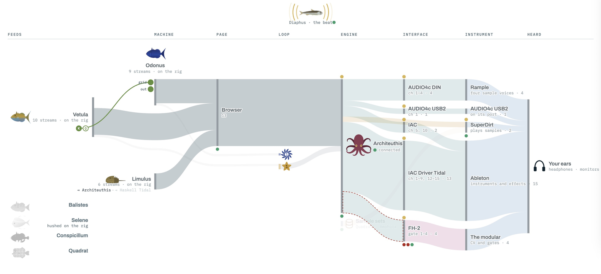
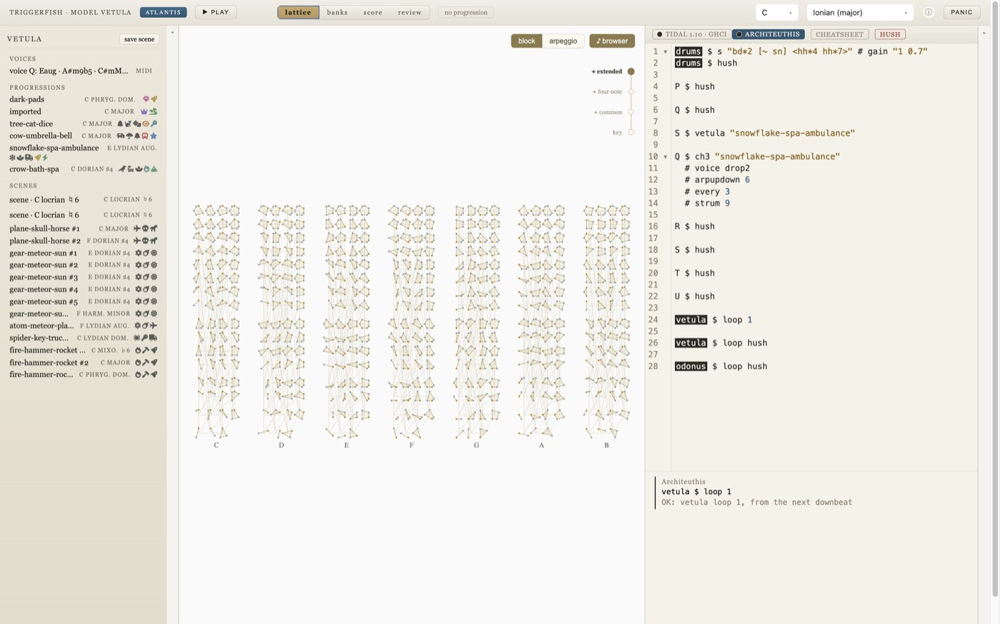
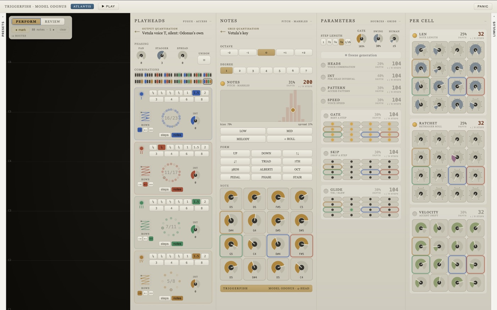
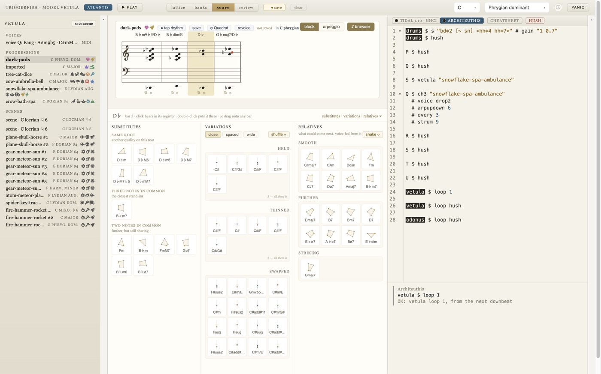
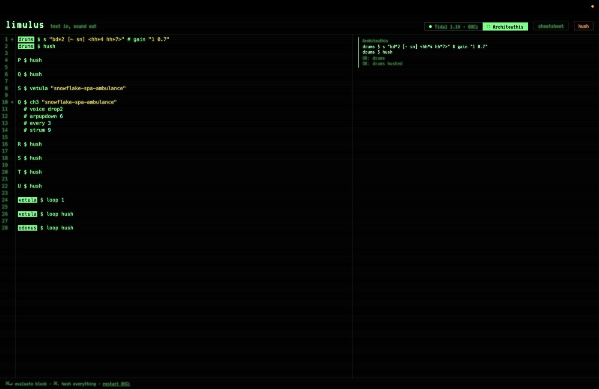
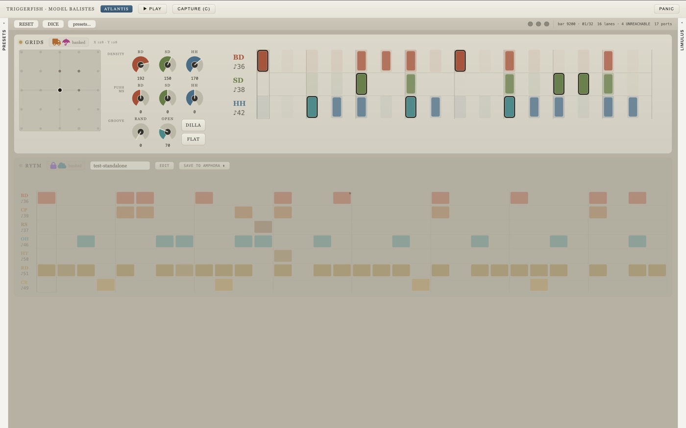
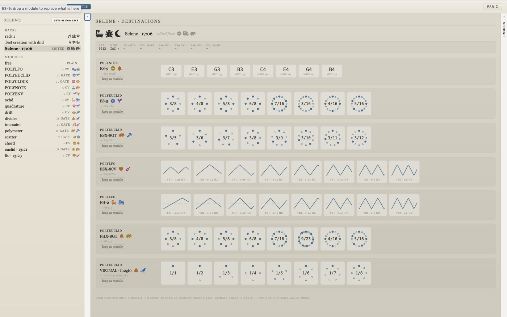
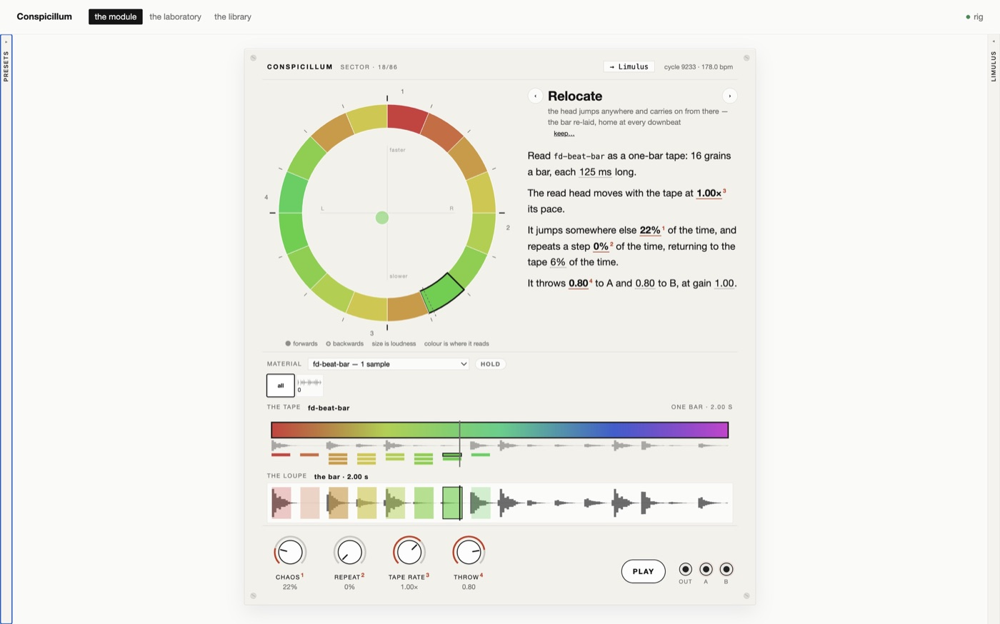

Triggerfish is a set of small machines for making music: one for finding chords and arranging progressions, one for patterns on a grid with several playheads. They send MIDI to your synths, drive a modular, and combine in a live-coding editor that speaks Tidal.

Nothing to install. Both play through the browser's own electric piano; in Chrome or Edge, allow MIDI and they play your synths instead.
These are a taster, and a small one. Each machine runs on its own here, without the rig that makes them an instrument. In the browser there is:
But it is the same code as the installed rig, page for page, so what you try here is how the machines work.



Short films of the rig in use are on their way: a progression found on the lattice, voiced in Limulus, looped from the river and heard through the modular.
The rig explained as a broadsheet: who's who on the reef, solo or Atlantis, and how a note finds its way to your ears.
In the browser you have the two machines on their own. Installed, they join the rest of the reef: the parts below run on your own computer, beside your instruments. An install guide is coming.



